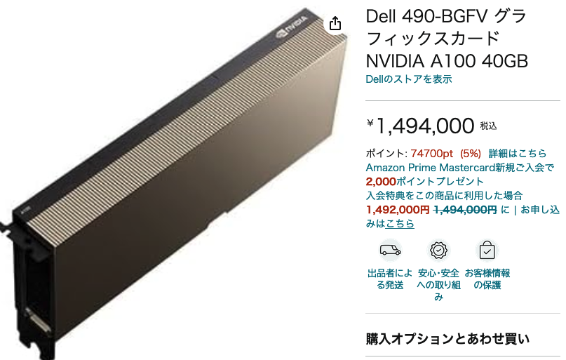

import torch
DEVICE = torch.device("mps")
train_batch_size = 128
epochs = 1A Blog Entry on Bayesian Computation by an Applied Mathematician
$$
$$
1 問題点と改善したいこと
データセットの読み込みの段階において，次のコードがある：
kwargs = {'num_workers': 5, 'pin_memory': True, 'prefetch_factor': 2}
train_loader = DataLoader(dataset=train_dataset, batch_size=train_batch_size, shuffle=True, **kwargs)
test_loader = DataLoader(dataset=test_dataset, batch_size=inference_batch_size, shuffle=False, **kwargs)これはデータセット（今回はMNIST）を読み込み，iterable 型としての仕様を可能にするためのコードである．
上述の通りのコードだとエポック 18 で RuntimeError: Shared memory manager connection has timed out を得たが，num_workers=0 とするとエラーが発生しなかった．
しかし，num_workers=0 （デフォルト設定）とすると，デフォルトの単一プロセス処理が実行されるため，並列による高速化の恩恵を受けられない．その結果，１エポック 12 分以上なので，40 時間以上をかける必要が出てきた（寝てる間もディスプレイをオフにするだけでスリープさせず，回し続ける）．
2 DataLoader の引数について
DataLoader メソッドのドキュメント を参照すると，
2.1 num_workers
は正整数に設定されると，その数だけ並列に動く ‘worker’ が起動され，マルチプロセス処理が実行される．
しかし，子プロセスも同等のメモリを占めるため，値が大きすぎるとランタイムエラーが発生する（issue #13246 参照）．
さらに，この際の並列処理は Python の multiprocessing パッケージによるもので，Windows と MacOS では（Unix 系のような fork() ではなく） spawn() が呼ばれる．これは別のインタープリターを開始するため，コードの大部分を if __name__ == "__main__": で囲まない限り，同じコードを何回も実行することとなり，ランタイムエラーが出現することとなる．
2.2 pin_memeory
しかし，CUDA 上のテンソルオブジェクトを並列処理で共有することは非推奨であり，その際は自動メモリ固定 (automatic memory pinning) を行う必要がある．
pinned memory とは page-locked メモリとも呼ばれ，通常の pageable メモリより転送速度が速いという．
さて，paging とはなんだろうか？（一旦後回し）
2.3 prefetch_factor
は各 worker が取ってきてストックしておくバッチの数である．
すなわち，num_workers * prefetch_factor だけデータをメモリに読み込んでおくことになる．
3 高速化法
3.1 Google Colab の利用
結局この方法でトレーニングをし，前稿 を完成させたのであった．

A100 が税込 1,494,000 円であったが，これを利用すると１エポック 22 秒で実行できた．
3.2 torch.nn.DataParallel の使用
自分のローカルマシンは CUDA がないため利用できないが，ある場合は PyTorch のモジュールで並列処理が可能である．1
4 mps で本当に高速になっているのか？
アップルは Metal という計算 API を提供しており，これが Apple Silicon で利用できる．
とし，１エポックにかかる時間を比較する．その他の設定は前節と同様．
print("Start training DDPMs...")
model.train()
import time
start_time = time.time()
for epoch in range(epochs):
noise_prediction_loss = 0
for batch_idx, (x, _) in tqdm(enumerate(train_loader), total=len(train_loader)):
optimizer.zero_grad()
x = x.to(DEVICE)
noisy_input, epsilon, pred_epsilon = diffusion(x)
loss = denoising_loss(pred_epsilon, epsilon)
noise_prediction_loss += loss.item()
loss.backward()
optimizer.step()
print("\tEpoch", epoch + 1, "complete!", "\tDenoising Loss: ", noise_prediction_loss / batch_idx)
total_time = time.time() - start_time
print("Finish!! Total time: ", total_time)12:58 であった．一方で，CPU でも訓練してみる．
DEVICE = torch.device("cpu")
model = Denoiser(image_resolution=img_size,
hidden_dims=hidden_dims,
diffusion_time_embedding_dim=timestep_embedding_dim,
n_times=n_timesteps).to(DEVICE)
diffusion = Diffusion(model, image_resolution=img_size, n_times=n_timesteps, beta_minmax=beta_minmax, device=DEVICE).to(DEVICE)
print("Start training DDPMs...")
model.train()
import time
start_time = time.time()
for epoch in range(epochs):
noise_prediction_loss = 0
for batch_idx, (x, _) in tqdm(enumerate(train_loader), total=len(train_loader)):
optimizer.zero_grad()
x = x.to(DEVICE)
noisy_input, epsilon, pred_epsilon = diffusion(x)
loss = denoising_loss(pred_epsilon, epsilon)
noise_prediction_loss += loss.item()
loss.backward()
optimizer.step()
print("\tEpoch", epoch + 1, "complete!", "\tDenoising Loss: ", noise_prediction_loss / batch_idx)
total_time = time.time() - start_time
print("Finish!! Total time: ", total_time)１時間越え！
5 終わりに
あまりに時間がかかるので，本記事は eval: false としておく．